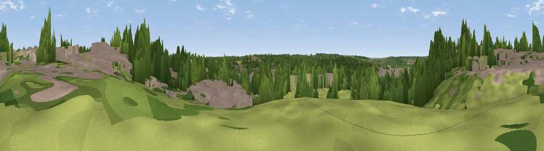

Bab's Hill
#44702 in England · top 97% of its area beats it · near CanterburyThe view, rendered

A 360° render of this exact spot computed from the terrain model, tree cover and land cover — summer colours, afternoon light, calibrated against photographs of famous viewpoints. Real trees, hedges and buildings will differ in detail.
The panorama
Grey silhouette: terrain skyline in each direction (720 bearings, Earth curvature and refraction included). Dashed green: skyline with trees (+15 m) and buildings (+8 m) as obstacles. Blue strip: how far the ground is visible on each bearing.
Where the view opens
Wedge length = distance to the farthest visible ground on that bearing (vegetation-aware). Rings at 10, 25 and 50 km.
What fills the view
43% woodland · 28% built-up · 24% grassland · 5% cropland
Angular shares of the visible panorama (visual magnitude), not map area. Landscape diversity 0.53 (0–1 Shannon).
Key numbers
More beautiful places nearby
The staircase of upgrades: each row has a higher view potential than everything closer. Driving times are estimates from straight-line distance, calibrated against real road routing — check an actual route before setting out.
| Place | Direction | Drive | Score |
|---|---|---|---|
| Viewpoint near Broad Oak | N · 3 km | ~7 min | 53.5 |
| Viewpoint near Yorkletts | NW · 9 km | ~18 min | 60.9 |
| The Mount (Popsy's View) | WSW · 12 km | ~23 min | 61.7 |
| Viewpoint near Wye | SW · 14 km | ~26 min | 70.9 |
| Viewpoint near Brabourne | SSW · 16 km | ~28 min | 71.6 |
| Viewpoint near Brabourne | SSW · 16 km | ~29 min | 71.9 |
| Viewpoint near Etchinghill | S · 19 km | ~33 min | 76.9 |
| Tolsford Hill | S · 19 km | ~33 min | 77.9 |
51.27683, 1.09795 · source: osm peak · position refined by local search. Computed location — check access rights before visiting.